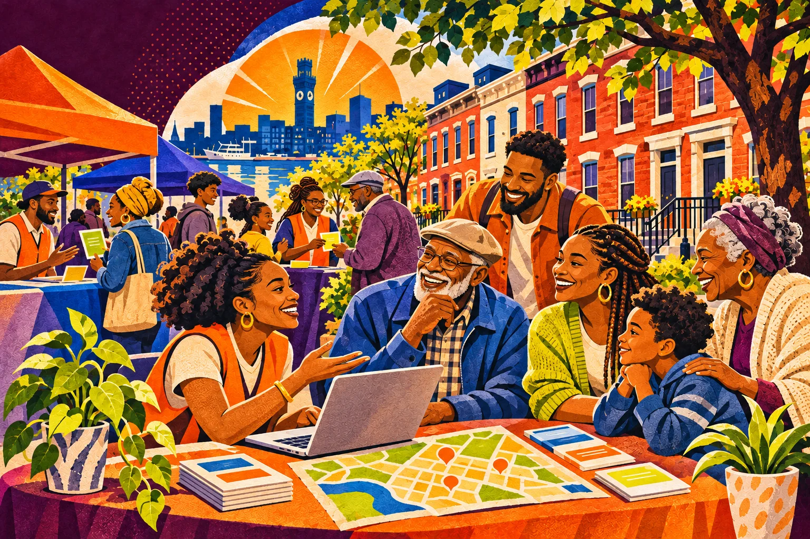

Website & digital presence
Developing CCB’s website structure and content to explain the initiative and guide visitors toward useful information.
Building digital tools and community-facing communications for a Baltimore initiative connecting families, youth, and elders with local resources.
Clarion Call Baltimore is a community initiative built to connect families, young people, and elders with resources, relationships, and opportunities across Baltimore. I serve on the founding team as Director of Digital Strategy and Communications, helping shape how the work is organized and how people discover and engage with it.
My focus is to make information easier to find and easier for community partners to keep current—so the website, resource directory, outreach, and participation tools can work together.

Developing CCB’s website structure and content to explain the initiative and guide visitors toward useful information.
Organizing resource listings so residents and partner organizations can navigate services and update information with greater clarity.
Connecting paper sign-ups and online submissions with a shared tracking workflow, including consolidation in Google Sheets.
Creating digital and print outreach materials and planning for a shared calendar that helps network organizations coordinate events.
I work across content, systems, and collaboration: clarifying what people need to know, structuring the information so it can be maintained, and helping the team move from ideas to usable digital tools. The goal is a community-centered resource hub that grows with the people and organizations it serves.